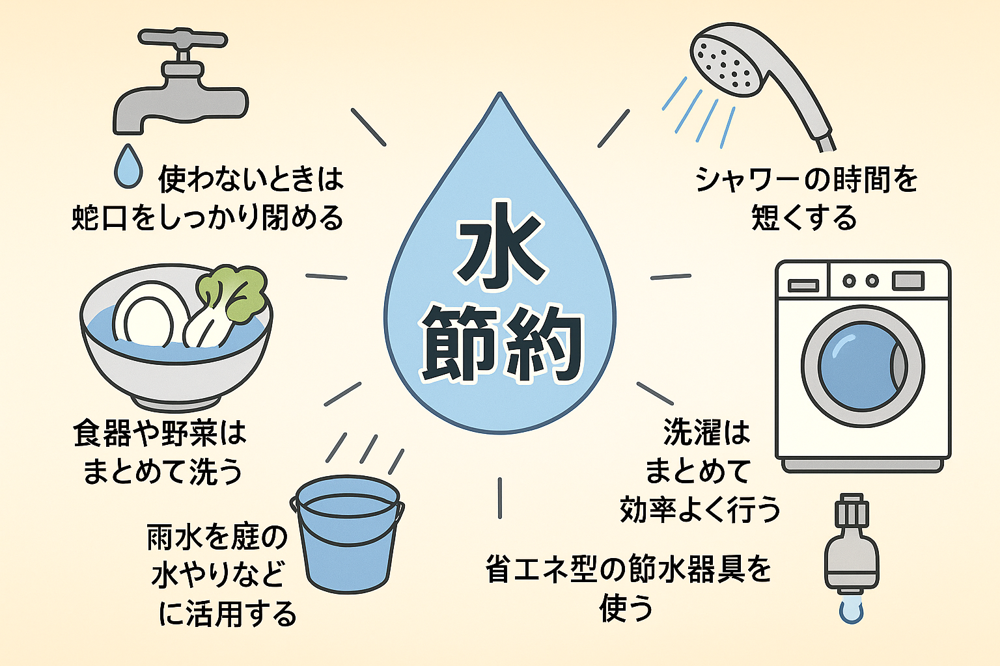
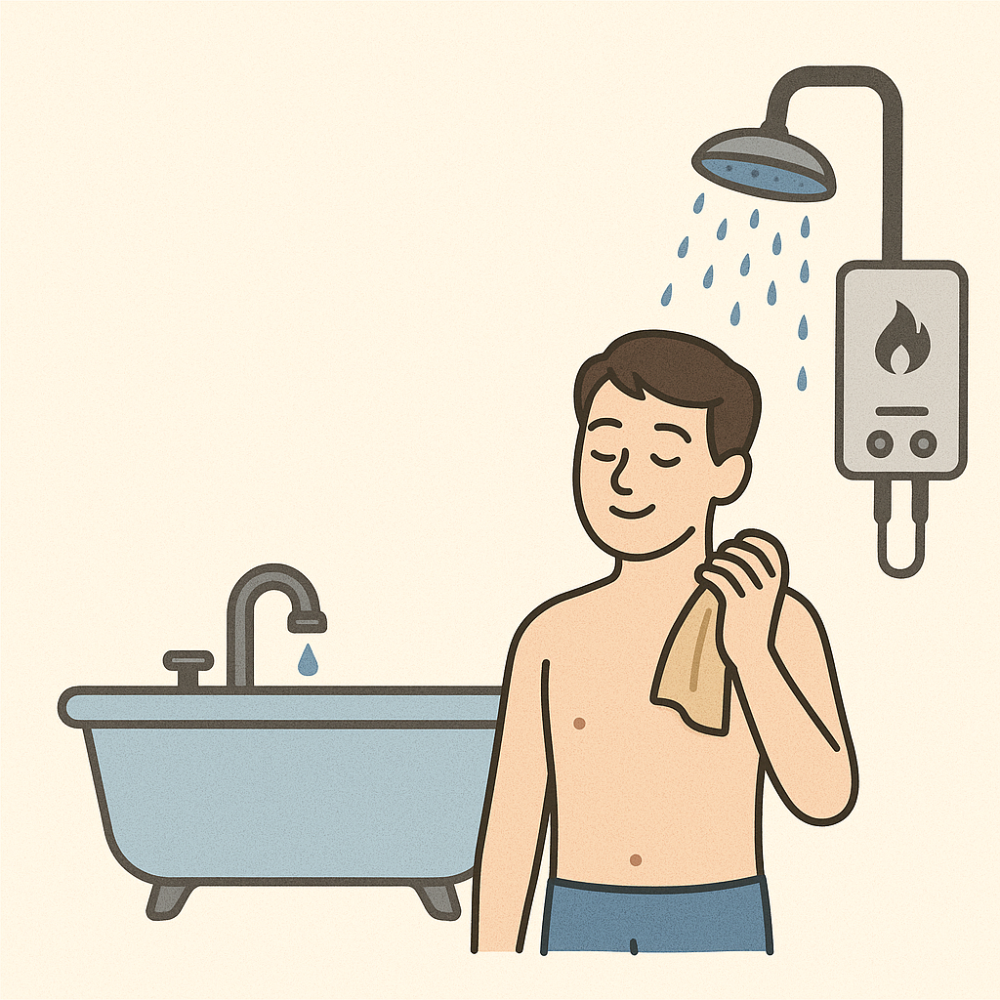
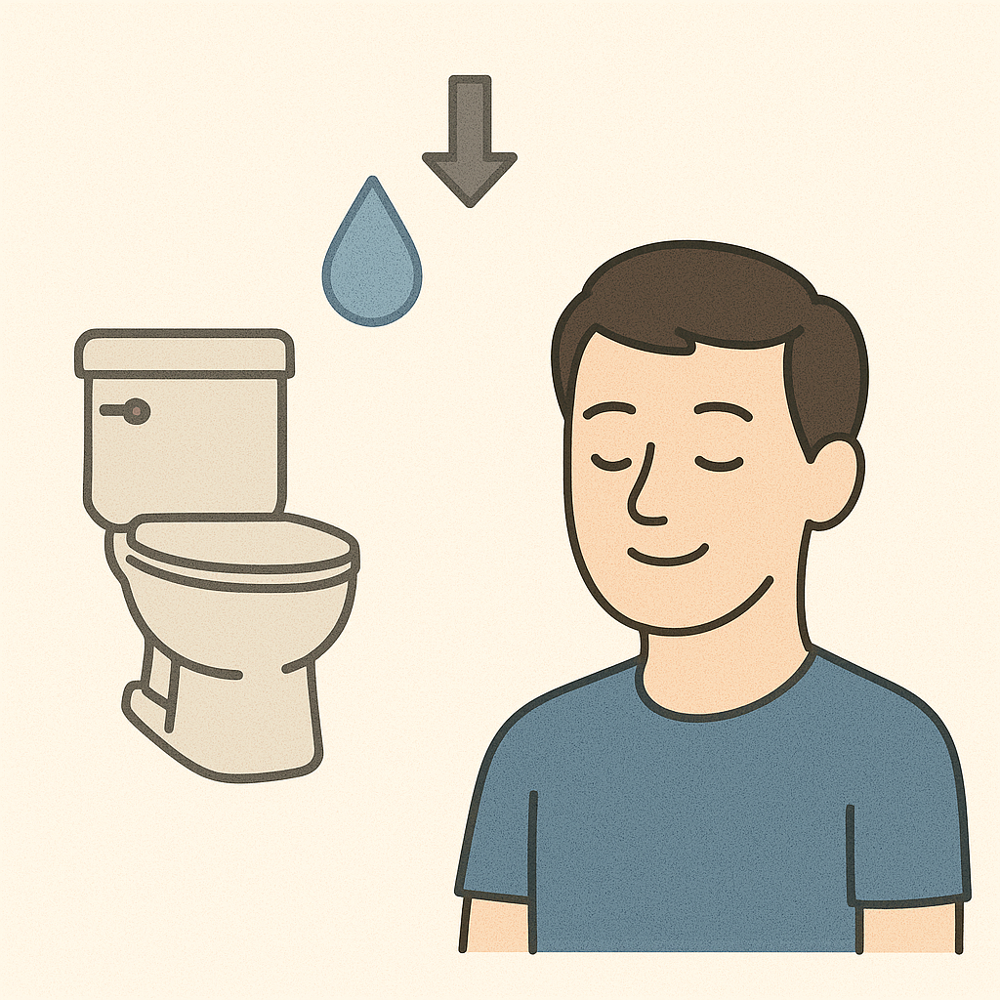
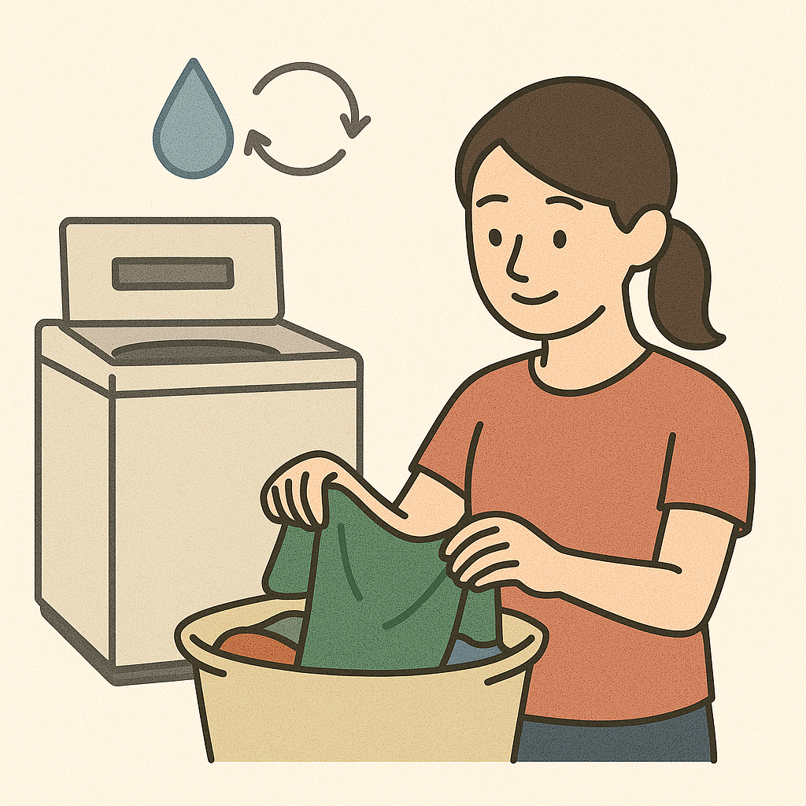
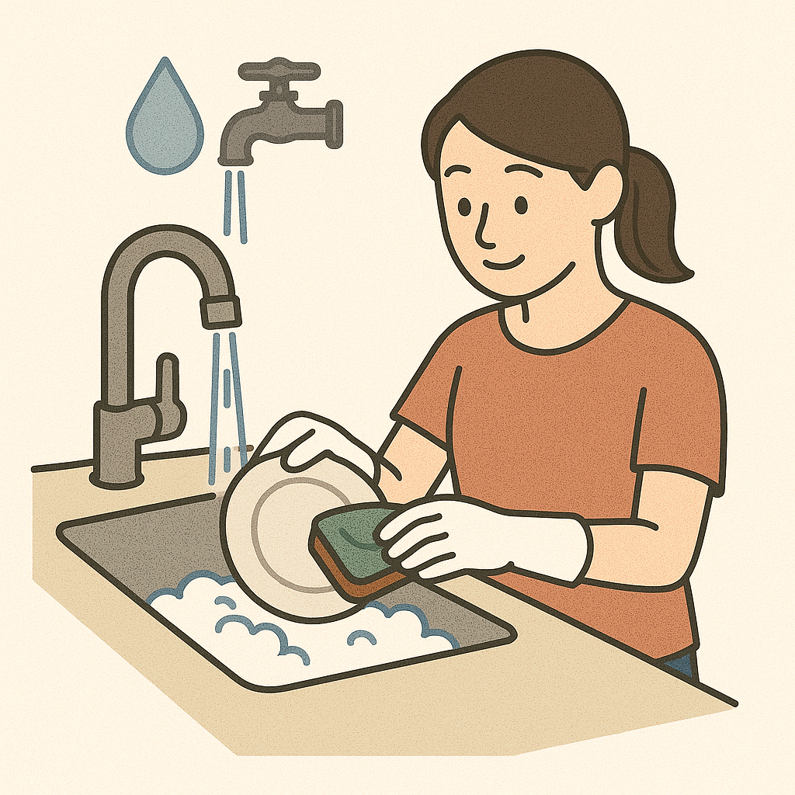

生活の中に隠れた節水ポイントとは？
私たちの生活に欠かせない水。誰もが「水道代はできるだけ抑えたい」と思うものです。 節水と聞くと「シャワーを短時間で切り上げる」など、我慢しなければならないイメージがあるかもしれませんが、ちょっとした工夫で簡単に水道代を節約することができます。 具体的にどのようにすれば水道代を節約できるのか、日々の生活の中で快適さや清潔さを損なわずにできる節水方法を紹介します。
目次
- 1 入浴時に使う水と節約のコツ ↓
- 2 毎日のトイレでできる水道代節約 ↓
- 3 洗濯機を効率よく使う方法 ↓
- 4 食器洗い＆料理の水の使い方 ↓
入浴時に使う水と節約のコツ
家庭で最も多く水道を使うのはお風呂です。シャワーや浴槽のお湯はりは、 家庭全体の水使用量の約40〜50％を占めるといわれています。シャワー時間を1分短縮するだけで も大きな節約効果があり、節水型シャワーヘッドの導入もおすすめです。また、浴槽の残り湯を 洗濯に再利用することで水道代とガス代の両方を抑えられます。さらに、家族で入浴時間をまとめる と追い焚きの回数が減り、効率的な節約につながります。
意外と知らない歯みがき編
歯をみがくときに、つい習慣で水道の蛇口をひねったままにしてしまう人は少なくありません。しかし、そのわずかな時間でも水はどんどん流れ出し、1回あたりで見ると小さな量に思えても、1日、1か月、1年と積み重ねると驚くほど大きな水のムダ遣いにつながります。実際、水道を流しっぱなしにして歯をみがくと、1分間でおよそ6リットルもの水が失われるといわれています。 そこでおすすめなのが「コップに水をくんでから歯みがきをする」という方法です。コップ1杯の水であれば、口をすすぐのにも十分足りますし、必要以上に水を浪費することもありません。ほんの少しの意識の変化で、1回につき数リットル、年間にすると数千リットル単位の水を節約することができるのです。 こうした小さな工夫は、環境への負担を減らすだけでなく、毎月の水道代の節約にもつながります。私たち一人ひとりのちょっとした心がけが、地球の未来を守り、お財布にもやさしい結果をもたらしてくれるのです。今日からぜひ「コップで歯みがき」を実践してみましょう。
毎日のトイレでできる水道代節約
トイレは家庭全体の水道使用量の約20〜25％を占めています。 特に古いタイプのトイレは1回の洗浄で10リットル以上を使うこともあり、水の無駄遣い につながります。節水型トイレに交換することで大幅に削減できるほか、大・小レバーを 正しく使い分けるだけでも効果的です。さらに、タンク内に取り付けられる節水器具を活用したり、 水漏れがないかを定期的にチェックすることも忘れずに行うとよいでしょう。
洗濯機を効率よく使う方
洗濯機の使用は家庭全体の水道使用量の約15〜20％を占めます。 毎日少量ずつ洗濯をすると水道代がかさむため、できるだけまとめ洗いを心がけることが大切です。 さらに、お風呂の残り湯を洗濯に利用するのも有効な方法です。最近では「すすぎ1回」 コースに対応した洗剤も多く、すすぎ回数を減らすだけでも節水につながります。加えて、 節水型洗濯機を導入すれば長期的に大きな効果を得られます。
食器洗い＆料理の水の使い方
台所では、食器洗いや料理の下ごしらえで全体の約15％の水が使われています。 流水で食器を洗うと大量の水を消費してしまうため、ため洗いを基本にすることが重要です。 野菜や果物を洗う際も、ボウルに水をためて洗う方が効率的です。さらに、最新の食器洗浄機は 手洗いよりも水の使用量が少なく、光熱費削減にも役立ちます。また、冬場はお湯の使いすぎにも注意し、 必要最低限で済ませる工夫が求められます。
